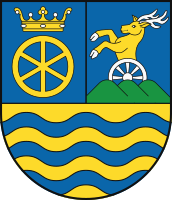

Flag

Coat of Arms
| Population | 566 008 |
| Males | 277 521 (49.03%) |
| Females | 288 487 (50.97%) |
| 0-14 years | 83 464 (14.75%) |
| 15-64 years | 383 132 (67.69%) |
| 65+ years | 99 412 (17.56%) |
| Major Nationalities | Slovak (73.08%), Hungarian (20.46%) |
| Major Religions | Roman Catholicism (61.37%), Atheism (24.69%) |
| Area | 4 146.3 km2 |
| Density | 136.51/km2 |
| Urbanisation | 46.80% |
| Largest Cities | Trnava (62 955), Piešťany (26 668) |
| Highest Elevation | 766.7 m |
| Lowest Elevation | 107.1 m |
| Major Universities | Trnava University, University of Ss. Cyril and Methodius in Trnava |
| Unemployment Rate | 4.4% |
| Average Monthly Earnings | EUR 1 421 |
| GDP Total | EUR 12.102 billion |
| GDP Per Capita | EUR 21 209 |